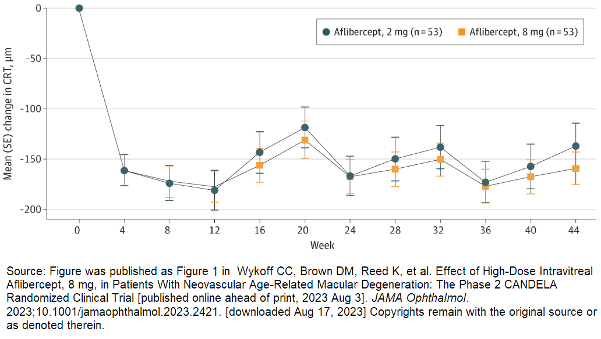
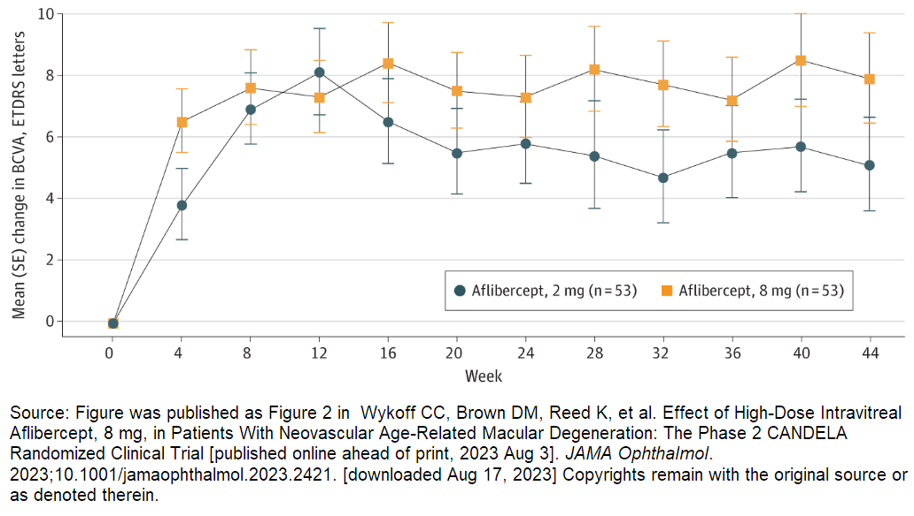

CANDELA
Summary1
- The CANDELA study was a randomized, multicenter, single-masked, Phase 2 study that evaluated the efficacy and safety profile of IVT-AFL 8 mg vs 2 mg in treatment naïve patients with nAMD.
-
Proportion of eyes without fluid in the central subfield:
-
Week 16
- 50.9% (27/53) in the 8 mg group vs 34.0% (18/53) in the 2 mg group
- Difference: 17.0%; 95% CI -1.6 to 35.5; P=0.08
-
Week 44
- 39.6% (21/53) in the 8 mg group vs 28.3% (15/53) in the 2 mg group
- Difference: 11.3%; 95% CI -6.6 to 29.2; P=0.22
-
Week 16
- Mean change in BCVA from baseline to Week 44 was 7.9 letters in the 8 mg group vs 5.1 letters in the 2 mg group.
- Least squares mean difference: 2.8; 95% CI -1.4 to 7.0 letters; P=0.20
- No differences in safety profiles between groups were observed.
Design1
- Treatment-naive patients with active subfoveal CNV secondary to nAMD and BCVA ETDRS score of 78 to 24 letters were randomized 1:1 to receive IVT-AFL 8 mg (n=53) or IVT-AFL 2 mg (n=53) for 3 monthly doses followed by q12 (Week 20 and Week 32).
- Patients were permitted to receive PRN treatment at Weeks 24, 28, 36, and 40 if they met the following criteria: loss of ≥5 letters from Week 20 due to disease progression or anatomical findings such as worsening/persistent retinal fluid, new/worsening retinal PED, or new/persistent hemorrhage.
- The coprimary endpoints were proportion of eyes without fluid in the center subfield at Week 16 and safety.
Dosing and Visit Schedule

Results1
- Of the 106 patients enrolled, 100 patients completed Week 44 of the study (8 mg, n=51; 2 mg, n=49).
- Baseline mean BCVA was 57.9±13.6 letters in the 8 mg group and 58.2±10.5 letters in the 2 mg group.
- Through Week 44, the mean number of injections in patients completing the study was 5.8 for IVT-AFL 8 mg and 5.9 for IVT-AFL 2 mg.
-
The total number of PRN injections administered was 33 in the 8 mg group and 38 in the 2 mg group.
- Of patients who completed the study, a total of 29/51 eyes (56.9%) in the 8 mg group and 24/49 eyes (49.0%) in the 2 mg group did not receive PRN/additional treatment.
- At Week 16, 27/53 (50.9%) patients in the 8 mg group had no fluid in the central subfield vs 18/53 (34.0%) patients in the 2 mg group (treatment difference 17.0%; 95% CI -1.6 to 35.5; P=0.08)
- At Week 44, 21/53 (39.6%) patients in the 8 mg group had no fluid in the central subfield vs 15/53 (28.3%) patients in the 2 mg group (treatment difference 11.3%; 95% CI -6.6 to 29.2; P=0.22)
Proportion of Eyes Without Fluid in the Center Subfield

- The mean (SE) change in CRT from baseline to Week 44 was -159.4 (16.4) μm for the 8 mg group and -137.2 (22.8) μm for the 2 mg group (least squares mean difference: -9.5; 95% CI -51.4 to 32.4; P=0.65)
Mean Change from Baseline in CRT

-
Mean (SE) change in BCVA from baseline to Week 44 was 7.9 (1.5) letters in the 8 mg group vs 5.1 (1.5) letters in the 2 mg group.
- Least squares mean difference: 2.8; 95% CI -1.4 to 7.0 letters; P=0.20
Mean Change from Baseline in BCVA

Safety1
Overall, no new safety signals were identified. The overall safety of 8 mg IVT-AFL was similar to that of IVT-AFL 2 mg.
Ocular Safety
-
No vascular occlusive events
- There was 1 case of iritis in the 8 mg group, which was mild and resolved with topical therapy.
- No IOP increases of clinical concern in either group
Non-Ocular Safety
- 2 cases (one in each treatment group) of non-serious worsening hypertension
- No APTC AEs
- One death in the 8 mg group (occurred after study withdrawal due to glioblastoma and was not considered related to study treatment)
Key TEAEs Through Week 44

Reference
-
Wykoff CC, Brown DM, Reed K, et al. Effect of High-Dose Intravitreal Aflibercept, 8 mg, in Patients With Neovascular Age-Related Macular Degeneration: The Phase 2 CANDELA Randomized Clinical Trial (incl suppl) [published online ahead of print, 2023 Aug 3]. JAMA Ophthalmol. 2023;10.1001/jamaophthalmol.2023.2421.
PMID: 37535382